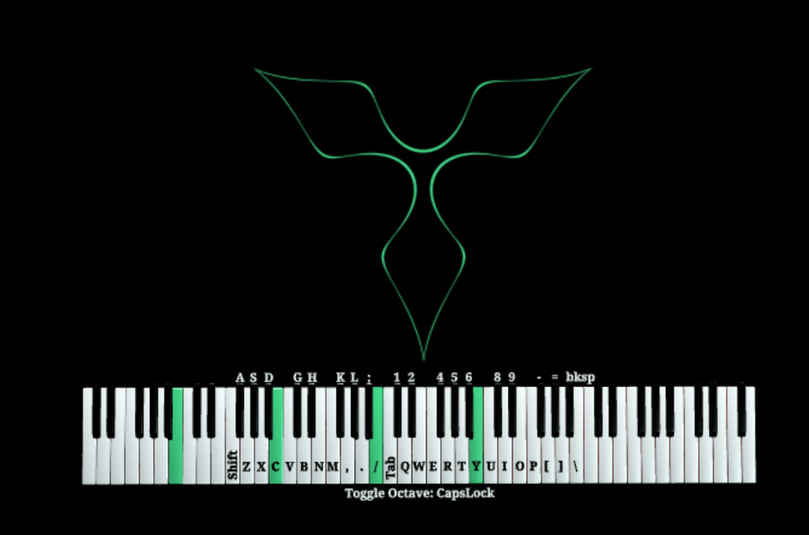
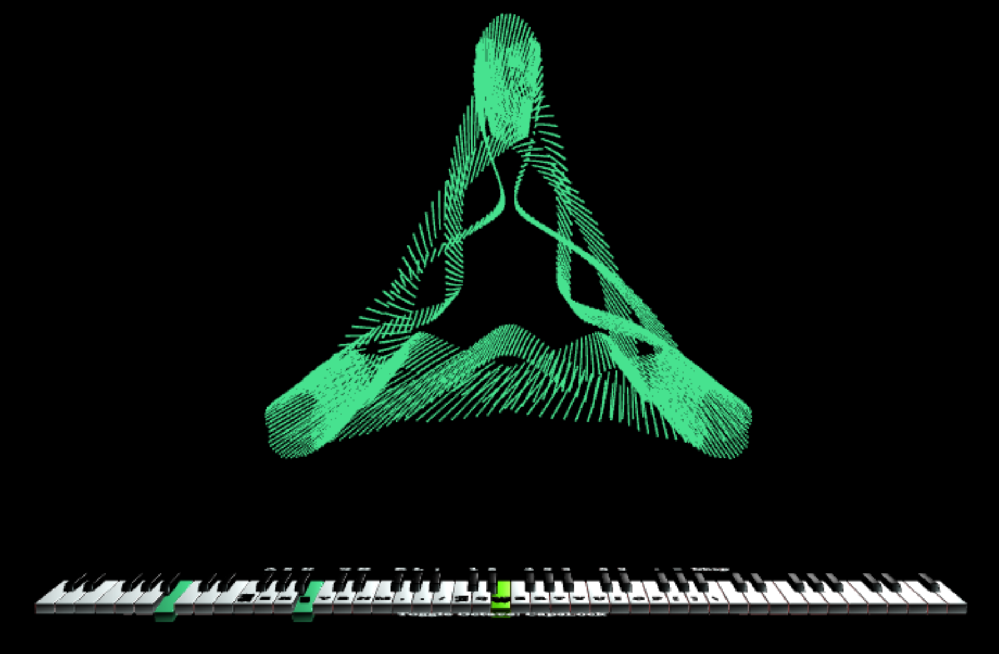
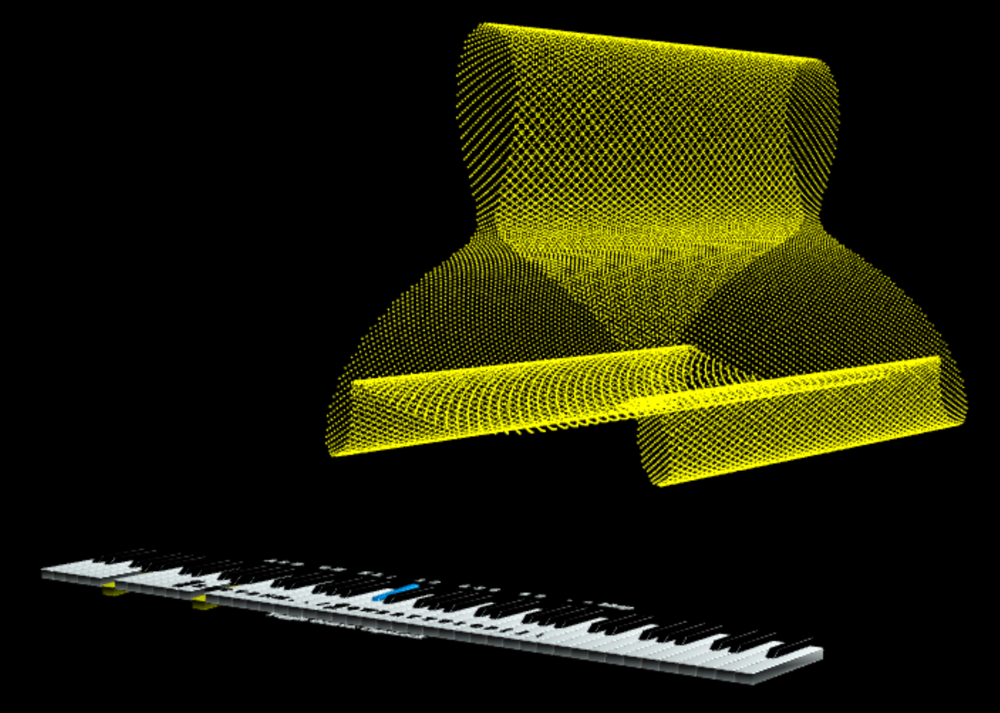
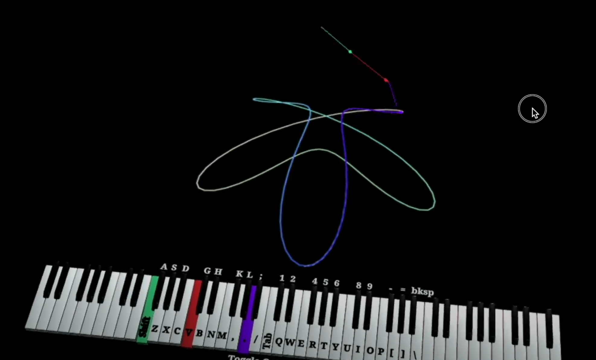

Back to home page
Source Code
VSKeys
Live project link:
https://aaronskepasts.github.io/VSKeys/
VSKeys is an in-browser 3D Piano player and real-time harmony visualizer created using JavaScript libraries Three.js, Tone.js, and MIDI.js. This project achieved Best Overall, Innovation, Art Direction, and Audio awards for a Princeton University Computer Graphics Class of 80 students.
Please watch the video above to see this visualizer live in action and to learn about how it works. Also feel free to checkout the live project at the link above.
Project AwardsSource Code
Skills
- Interactive graphics
- Complex 3D Geometry
- In-browser music player
- 3D Particle Systems
- HTML Canvas
Photos:




